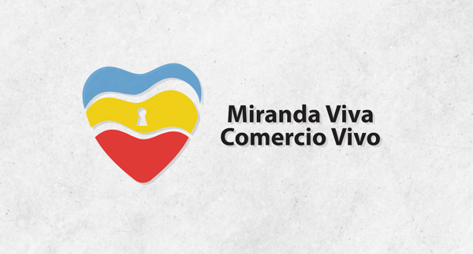
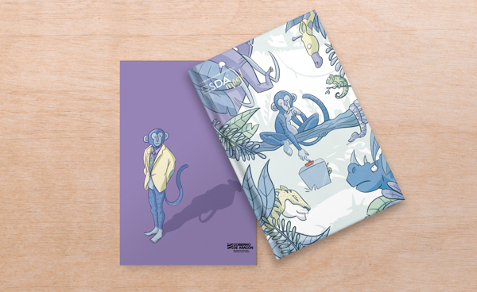
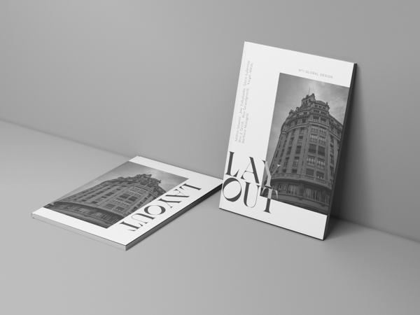
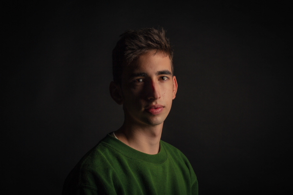

Carteles
- Portada para la revista babel.
- Día internacional del Jazz.
- Cartel promocional para Care Nouveau.
- Cartel para el día de San Jorge.
Bienvenido a mi portafolio digital, aquí podreis ver algunos de mis trabajos. Espero que os guste. 🤯
Lo que comenzó hace unos años como una aventura a través de briefs y diseños, se ha convertido en pasión por el desarrollo de imagen gráfica y el diseño web.
Mi nombre completo es Pablo Alonso Santos, nací en Miranda de Ebro y me trasladé hasta Zaragoza para estudiar diseño gráfico en la ESDA. No dudes en ponerte en contacto conmigo.
En todos mis proyectos trato de buscar una solución diferente con la intención de llegar a un resultado diferencialdor.
- Portada para la revista babel.
- Día internacional del Jazz.
- Cartel promocional para Care Nouveau.
- Cartel para el día de San Jorge.
Títulos de créditos de la famosa película "El Hoyo".
Con un estilo extrañamente amenazador y que transmite de forman nítida la frialdad, la tensión y el espíritu de la mítica película española dirigida po Galder Gaztelu-Urrutia.
Diseño de la nueva línea de cereales ahora más saludables.
Manteniendo la esencia y el espíritu de la marca con un diseño acualizado, estos tres nuevos sabores te harán sacar tu lado más salvaje estés donde estés y en cualquier momento.
Con este logo representamos la unión de todos los comericos mirandeses frente a los desastres provocados por el covid, un corazón que sigue latiendo aunque no nos viésemos. Es un logo de fuerza y esperanza, porque todos juntos volveríamos más fuertes.
Revista anual de la ESDA en la que se exponen los trabajos de fin de grado junto a la oferta educativa y entrevistas y reportajes a algunos de los miembros de la escuela.
Revista de dicada al diseño, con reportajes y entrevistas a los representantes más característicos, exposiciones y análisis de las úlitimas tendencias y mucho más.
La profesión de la fotografía ha estado en mi familia prácticamente desde que nací. Esta, ofrece una variedad infinita de opiniones, de interpretaciones y de ejecuciones, pero siempre el componente más importante de una cámara está detrás de ella.
Colección de cubiertas retóricas.
- Un dios salvaje
- Música de mierda.
- La geometría del trigo.